營運暨評鑑追蹤平台 同仁操作手冊
2026-10-30 版
1. 開始之前
這個平台是中心的線上工作本：主任交辦給你的工作、你的進度回報、評鑑要準備的資料，都記在同一個地方。你不用再另外填 Excel 或傳訊息報告進度，在平台上回報，主任和組長就看得到。
網址： https://renotzeng300-lang.github.io/datong-platform-web/
建議把網址加入瀏覽器書籤，或在手機加到主畫面，之後點一下就能打開。
你需要準備：
- 一台電腦或手機，用 Chrome、Edge 或 Safari 瀏覽器都可以，不用安裝任何軟體。
- 你自己的 Email 信箱。帳號由主任替你開通，每人一個，不可以和別人共用。
本手冊的截圖說明：
- 截圖裡的人名（例如「陳小華」「王大同」）和工作都是示範資料，你實際看到的會是自己的工作。
- 截圖上的橘色框和數字，就是步驟裡要你按或要填的地方，照數字順序操作即可。
- 按鈕上的字以畫面為準，本手冊用「」框起來，例如按「送出回報」。
平台幫你守住的規則（不用自己記）：
- 主任還沒核定的工作，不算正式交辦，你不需要動工，也不會收到通知。
- 你只看得到自己負責或協作的工作，別人的工作細節看不到。
- 所有回報都會留下紀錄，不能修改或刪除。寫錯了就再回報一次，用新的內容說明。
- 請不要在任何欄位寫入服務對象的姓名、病歷、家庭狀況或申訴內容。 需要提到時，用「成人區 A 生」這類去識別化寫法。
2. 第一次登入
第一次要先用邀請信設定密碼，之後每次都用 Email 加密碼登入。
2-1 收邀請信、設定密碼
- 主任替你開通帳號後，你的信箱會收到一封英文信，主旨是「You have been invited」。沒看到的話，請查一下「垃圾郵件」或「促銷內容」。
- 點信中的「Accept the invite」連結。
- 瀏覽器會打開平台的「設定密碼」頁，上方顯示你的 Email。
- 在「新密碼（至少 10 字元）」輸入密碼，在「再輸入一次」輸入同一組密碼。
- 按「儲存並進入系統」，就會進入你的首頁。
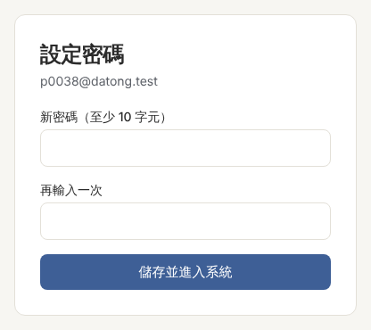
- 邀請連結只能用一次，而且有時效。如果畫面出現「連結無效或已過期」，請請主任重新寄一次。
- 密碼請不要和其他網站共用，也不要告訴任何人，包括主任。
2-2 之後每次登入
- 打開平台網址。
- 在「電子郵件」輸入你的 Email。
- 在「密碼」輸入你設定的密碼。
- 按「登入」。
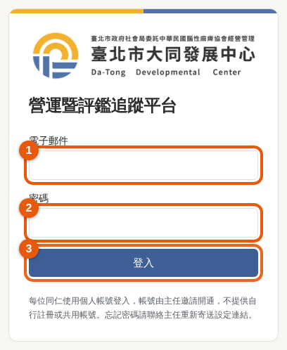
如果你是點某個工作的連結進來、先被帶到登入頁，登入後會自動回到那個工作。
2-3 登出
- 電腦： 按畫面右上角的「登出」，或左側選單最下方你名字下的「登出」。
- 手機： 按上方「選單 ☰」，最下面就是「登出」。
- 在共用電腦（例如辦公室公用電腦）用完，一定要登出。
2-4 忘記密碼
平台沒有「忘記密碼」按鈕。請告訴主任，主任會寄一封重設密碼的信給你。點信中連結後，一樣會到「設定密碼」頁，照 2-1 的第 4、5 步設定新密碼即可。
3. 認識畫面
登入後的第一頁是「我的首頁」，它會告訴你今天先做哪件事。大部分時候，你只要從首頁點「前往處理」就好。
3-1 左側選單
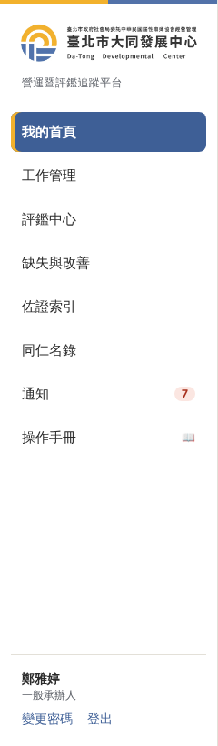
| 選單 | 用途 |
|---|---|
| 我的首頁 | 依急迫程度列出你的工作，每天從這裡開始 |
| 工作管理 | 你看得到的全部工作列表，可以搜尋、篩選；也從這裡提報新工作 |
| 評鑑中心 | 第 12 次評鑑的 58 項指標、官方標準原文與盤點進度 |
| 缺失與改善 | 被發現的缺失與指派給你的改善措施 |
| 佐證索引 | 評鑑佐證放在哪裡（Google 雲端連結或實體櫃位） |
| 同仁名錄 | 同組同仁與主任 |
| 通知 | 紅色數字是未讀通知數 |
| 操作手冊 | 就是這份手冊，可以線上看或下載 PDF |
如果你是組長或評鑑統籌，還會多看到幾個選單，請看第 10 章。
3-2 我的首頁
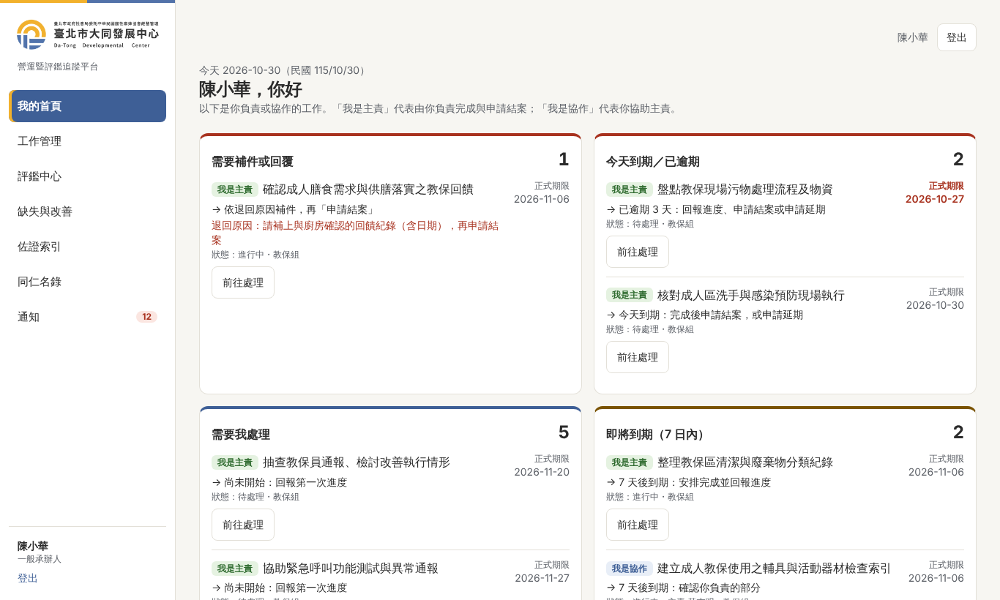
首頁把你的工作分成五區，由上到下就是處理的優先順序。每項工作只會出現在一區：
- 需要補件或回覆：你的申請被退回了，紅字會寫出退回原因。
- 今天到期／已逾期：今天就要處理。
- 需要我處理：還沒開始、等你回報第一次進度的工作。
- 即將到期（7 日內）：這週要安排完成。
- 我已送出、等待核定：球在主管那邊，你先不用動作。
每項工作上有幾個重點：
- 「我是主責」／「我是協作」：主責負責完成並申請結案；協作是幫忙主責，可以回報進度，但不能申請結案。
- 「→」開頭的一句話：平台建議你下一步要做什麼。
- 正式期限：右側的日期。逾期時會變紅色。
- 「前往處理」：點下去就是那項工作的頁面。
沒有工作的區塊會整理在最下方，顯示 0。
3-3 手機版
手機上左側選單會收起來。按畫面最上方的「選單 ☰」就能展開，登出也在這裡。其他操作和電腦版一樣。
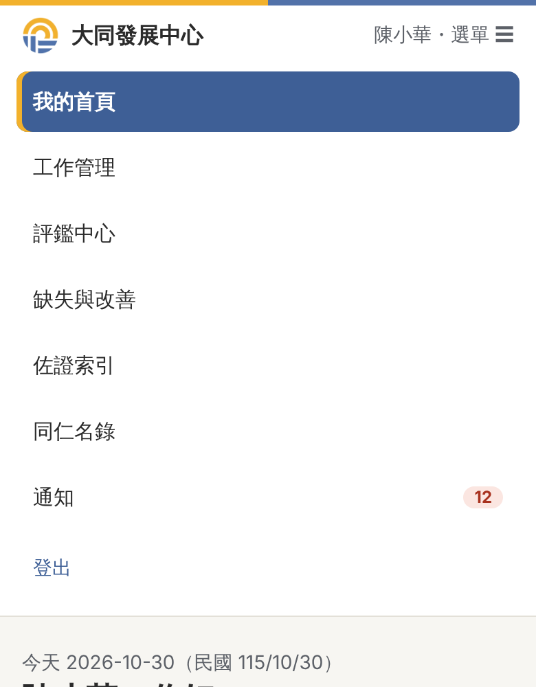
4. 查看我的工作
「工作管理」列出你看得到的全部工作；點工作名稱就能打開詳情頁。
4-1 工作列表與篩選
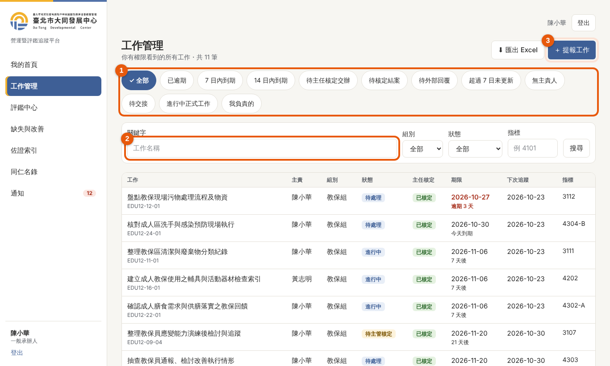
- 按左側選單「工作管理」。
- 用上方的快速篩選（①）一鍵找工作，例如「已逾期」「7 日內到期」「我負責的」。被選中的會打勾。
- 要找特定工作，在「關鍵字」（②）輸入工作名稱的幾個字，可以再搭配「組別」「狀態」「指標」，按「搜尋」。
- 點工作名稱，打開詳情頁。
「⬇ 匯出 Excel」會把目前篩選的結果下載成 Excel，檔案只含你有權限看的工作。內部資料請勿外流，用完請刪除。
4-2 工作詳情頁
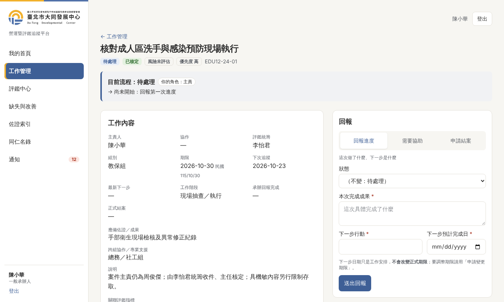
詳情頁從上到下是：
- 標題下的小標籤：工作狀態（例如「待處理」）、是否已核定、風險、優先度、工作編號。
- 灰底的「目前流程」框：告訴你現在輪到誰、你的角色，以及下一步建議。
- 左邊「工作內容」：主責人、協作、期限、應備佐證／成果、關聯的評鑑指標。
- 右邊「回報」：你在這裡回報進度、求助或申請結案（第 5 章）。
- 最下方「進度與核定歷程」：這項工作從交辦到現在的每一筆紀錄。
4-3 常見的工作狀態
| 狀態 | 意思 | 你要做什麼 |
|---|---|---|
| 待分派 | 還在等主任核定，不是正式交辦 | 不用動工 |
| 待處理 | 已交辦，還沒開始 | 開始後回報第一次進度 |
| 進行中 | 正在做 | 有進展就回報 |
| 待外部回覆 | 在等外部單位或廠商 | 在「下次追蹤日」追問 |
| 受阻 | 卡住了 | 用「需要協助」說明 |
| 待主管核定 | 已申請結案，等核定 | 等結果，不用再回報 |
| 已結案 | 主管已核定完成 | 無 |
5. 回報進度
每項工作右側的「回報」區有三個分頁，依你的狀況選一個：
| 分頁 | 什麼時候用 |
|---|---|
| 回報進度 | 有做一些事了，告訴主管做了什麼、下一步是什麼 |
| 需要協助 | 卡住了，需要別人幫忙，或要請主任做決定 |
| 申請結案 | 工作做完了，送主管核定（只有主責看得到這個分頁） |
切換分頁不會清掉已經填的內容；有未送出內容的分頁，名稱旁會出現一個小圓點。標「*」的欄位一定要填。
5-1 回報進度
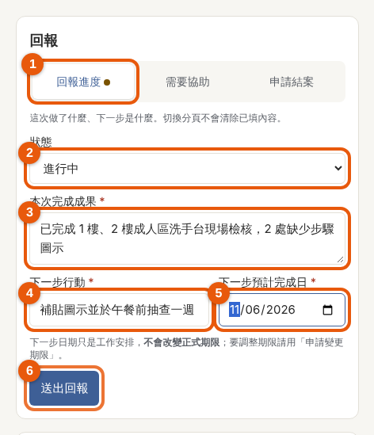
- 從首頁按「前往處理」，或從「工作管理」點工作名稱，打開工作。
- 在右側「回報」區點「回報進度」分頁（①）。
- 「狀態」（②）：第一次動工請改成「進行中」；在等外部回覆就選「待外部回覆」，並填「下次追蹤日」；不變就不用動。
- 「本次完成成果」（③）：具體寫這次做了什麼，例如「已完成 1、2 樓洗手台檢核，2 處缺少圖示」。
- 「下一步行動」（④）與「下一步預計完成日」（⑤）：接下來要做什麼、預計哪天做完。日期不能早於今天。
- 按「送出回報」（⑥）。看到綠色「進度已回報，歷程已更新。」就完成了。
「下一步預計完成日」只是你的工作安排，不會改變正式期限。要延後期限，請用 5-5「申請變更期限」。
5-2 需要協助
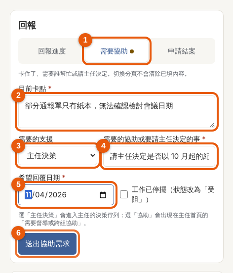
- 點「需要協助」分頁（①）。
- 「目前卡點」（②）：寫清楚卡在哪裡。
- 「需要的支援」（③）選一個：
- 協助：需要其他同仁或組別配合，會出現在主任首頁的「需要督導或跨組協助」。
- 主任決策：要請主任拍板，會進入主任的「決策佇列」。
- 「需要的協助或要請主任決定的事」（④）與「希望回覆日期」（⑤）。
- 如果工作已經完全停下來，勾選「工作已停擺」，狀態會改成「受阻」。
- 按「送出協助需求」（⑥）。
5-3 申請結案
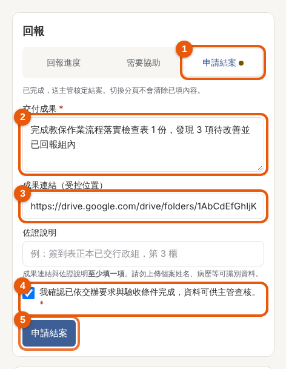
- 點「申請結案」分頁（①）。只有主責看得到；協作請通知主責提出。
- 「交付成果」（②）：寫完成了什麼。
- 佐證二選一：
- 「成果連結（受控位置）」（③）：貼中心 Google 雲端的檔案或資料夾連結。
- 「佐證說明」：紙本的話，寫放在哪個櫃、哪一層。
- 勾選「我確認已依交辦要求與驗收條件完成…」（④）。
- 按「申請結案」（⑤）。
送出後工作狀態變成「待主管核定」，會出現在首頁「我已送出、等待核定」。核定前不用再回報。
5-4 被退回時補件
主管覺得還不能結案時會退回，你會收到通知，這項工作也會移到首頁最上方的「需要補件或回覆」，紅字寫著退回原因。
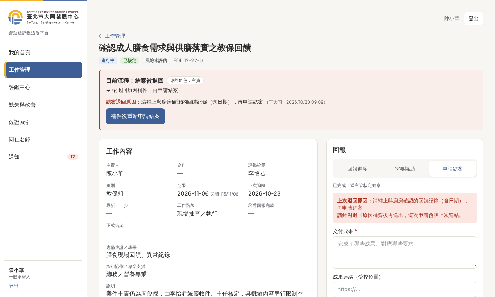
- 按「前往處理」打開工作。「申請結案」分頁會顯示「上次退回原因」。
- 依退回原因補齊資料，重新填「交付成果」（①）與佐證（②），再勾選確認（③）。
- 按「補件後重新申請結案」（④）。
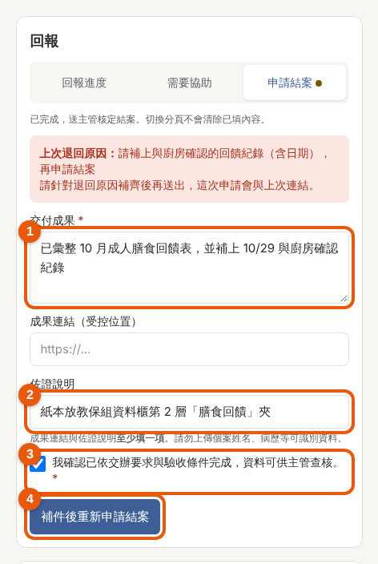
5-5 申請變更期限
來不及在期限內完成時，請先申請，不要等逾期。
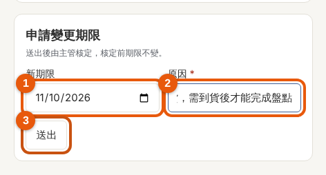
- 在工作頁右側往下捲，找到「申請變更期限」。
- 「新期限」（①）選新的日期。
- 「原因」（②）：說明為什麼需要延後。
- 按「送出」（③）。
主管核定前，原本的期限仍然有效。一項工作同時只能有一筆待核定的申請。
6. 提報新工作
發現一件應該要做、但還沒有人負責的事，可以自己提報。提報後會先進入「待主任核定」，主任核定前不算正式交辦。
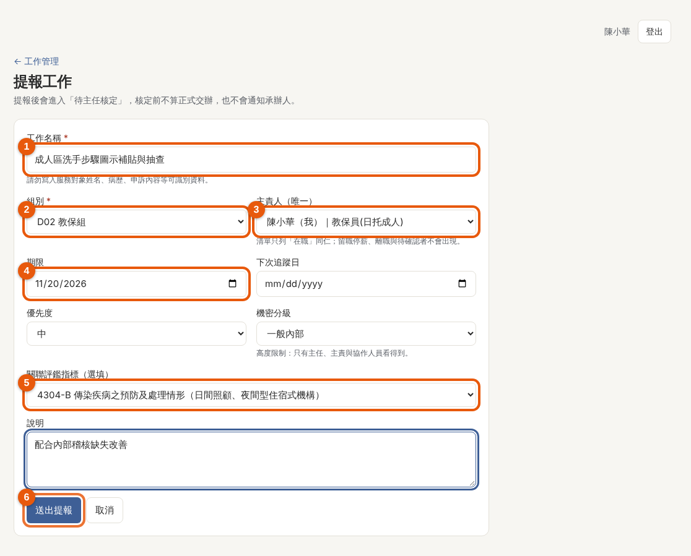
- 按「工作管理」，再按右上角「＋ 提報工作」。
- 「工作名稱」（①）：用一句話說清楚要做什麼。不要寫服務對象姓名。
- 「組別」（②）：選你自己的組別。
- 「主責人」（③）：可以選自己，或「— 暫不指定 —」讓主任決定。
- 「期限」（④）：你建議的完成日，主任核定時可能調整。
- 「優先度」、「機密分級」、「關聯評鑑指標」（⑤）、「說明」依需要填。
- 按「送出」（⑥）。
送出後會打開這筆工作，綠字顯示「已建立。目前為「待主任核定」…」。主任核定後你會收到通知；如果被退回，可以在同一頁修改後重新提報。
機密分級怎麼選：
- 一般內部：大部分工作。
- 限組別：只適合同組看的工作。
- 高度限制：只有主任、主責、協作人員看得到，組長和評鑑統籌也看不到。
7. 評鑑中心與缺失改善
評鑑中心放的是第 12 次評鑑的 58 項指標與官方標準原文；你可以隨時查看，是指標主責時才需要記錄檢核。這裡的數字是內部盤點進度，不是評鑑分數。
7-1 查看評鑑指標
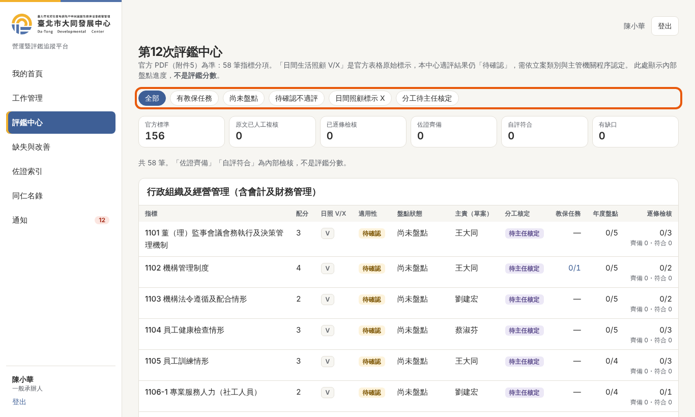
- 按左側「評鑑中心」。
- 用上方的標籤篩選，例如「有教保任務」「尚未盤點」。
- 點指標名稱，打開指標頁。
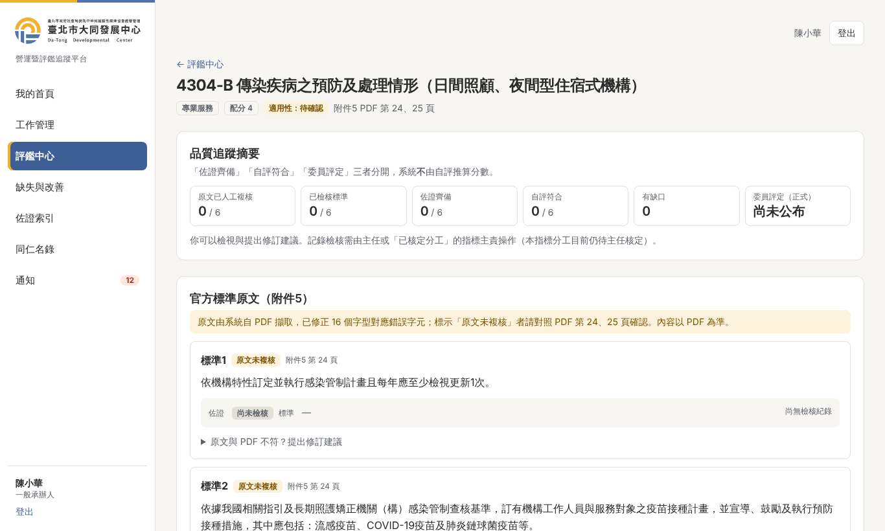
指標頁可以看到：官方標準原文（逐條）、評鑑實施方式、資料應準備期間、分工、年度佐證盤點、已登錄的佐證、相關缺失與關聯工作。
- 佐證齊備、自評符合、委員評定是三件不同的事。佐證齊了不代表符合，工作結案也不代表指標符合。
- 發現平台上的標準原文與官方 PDF 不同，可以按該條下方「原文與 PDF 不符？提出修訂建議」。
7-2 如果你是指標主責：記錄檢核
主任核定「分工」後，指標主責才能逐條記錄檢核。
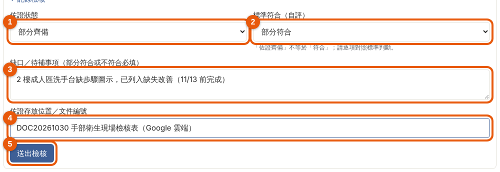
- 在指標頁找到要檢核的那一條標準，按「記錄檢核」展開。
- 「佐證狀態」（①）：未盤點／部分齊備／齊備。
- 「標準符合（自評）」（②）：待檢核／符合／部分符合／不符合／待確認不適用。
- 「缺口／待補事項」（③）：選「部分符合」或「不符合」時一定要填。
- 「佐證存放位置／文件編號」（④）。
- 按「送出檢核」（⑤）。紀錄會標「待複核」，等主任複核。
7-3 缺失與改善
缺失的流程是：發現缺失 → 主任安排改善措施（一個主責、一個期限）→ 主責回報完成 → 主任觀察成效，有效才結案。
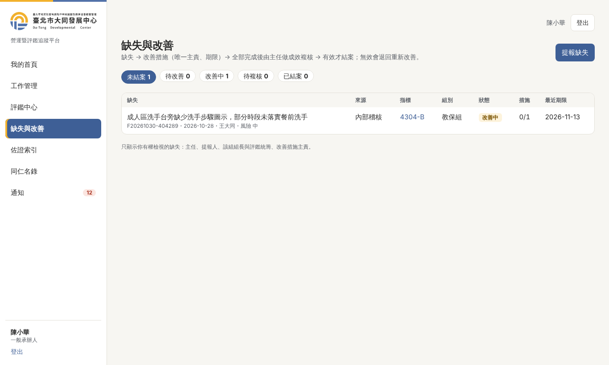
被指派改善措施時：
- 你會收到「你被指派一項改善措施」通知。按通知上的「查看缺失」，或從「缺失與改善」點缺失名稱。
- 做完後，在你的措施下方「完成情形與佐證位置」（①）寫做了什麼、紀錄放哪裡。
- 按「回報完成」（②）。
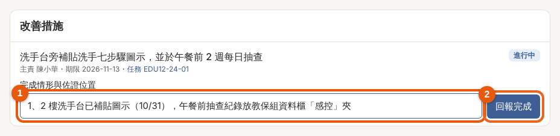
自己發現缺失時： 在「缺失與改善」按「提報缺失」，填缺失摘要、來源、發現日期、關聯指標後送出。摘要請去識別化，細節放在受控的佐證文件裡。
8. 佐證索引
平台不存放檔案本身，只記錄佐證的名稱、年度、關聯指標與存放位置。電子檔放在中心的 Google 雲端硬碟（tpta104@gmail.com），紙本放在中心檔案櫃。
8-1 登錄前：先把檔案放對地方
- 把檔案放進中心雲端硬碟裡、你那一組的資料夾（主任會先把資料夾分享給你的 Google 帳號）。不要放在你個人的雲端硬碟。
- 在 Google 雲端對檔案按右鍵 →「共用」→「複製連結」。
- 確認「一般存取權」是「限制」，不是「知道連結的任何人」。
- 含服務對象姓名、病歷、ISP、家庭或申訴內容的資料，不要放雲端，請放上鎖檔案櫃，平台只登錄櫃位與編號。
8-2 登錄佐證
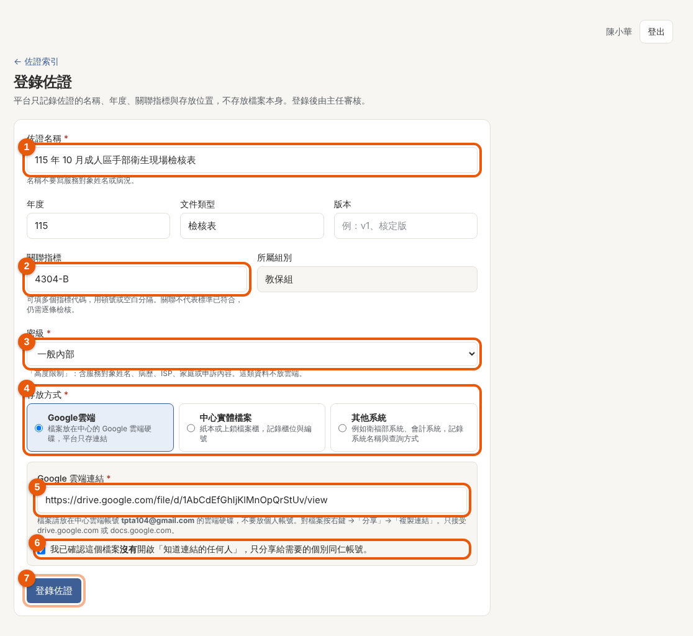
- 按左側「佐證索引」，再按「登錄佐證」。也可以從指標頁的「佐證文件」區按「登錄佐證」，指標會自動帶入。
- 「佐證名稱」（①）：例如「115 年 10 月成人區手部衛生現場檢核表」。
- 「年度」「文件類型」「版本」依需要填。
- 「關聯指標」（②）：填指標代碼，多個用頓號或空白分開，例如「4304-B」。
- 「密級」（③）：一般內部／限組別／高度限制。
- 「存放方式」（④）選一個：
- Google雲端：在「Google 雲端連結」（⑤）貼上 8-1 複製的連結，並勾選「我已確認這個檔案沒有開啟「知道連結的任何人」…」（⑥）。
- 中心實體檔案：填櫃位與編號，例如「教保組資料櫃第 2 層」。
- 其他系統：填系統名稱與查詢方式。
- 按「登錄佐證」（⑦）。佐證會是「待審核」，等主任審核。
8-3 調閱佐證
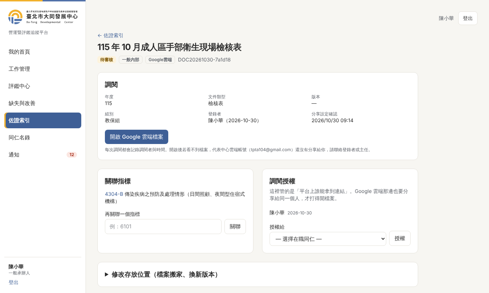
- 在「佐證索引」點佐證名稱。
- 按「開啟 Google 雲端檔案」。實體檔案則會顯示存放位置。
- 每次調閱都會記錄調閱者與時間。
開啟後看不到檔案，代表 Google 雲端還沒分享給你，請聯絡登錄者或主任。平台上的「調閱授權」管的是誰拿得到連結，Google 雲端那邊也要分享給同一個人，兩邊都開了才打得開。
檔案搬家或換新版時，在佐證頁最下方「修改存放位置」更新，佐證會回到「待審核」。
9. 通知
平台不會寄 Email，所有通知都在平台內。左側「通知」旁的紅色數字是未讀數，建議每天登入時看一下。
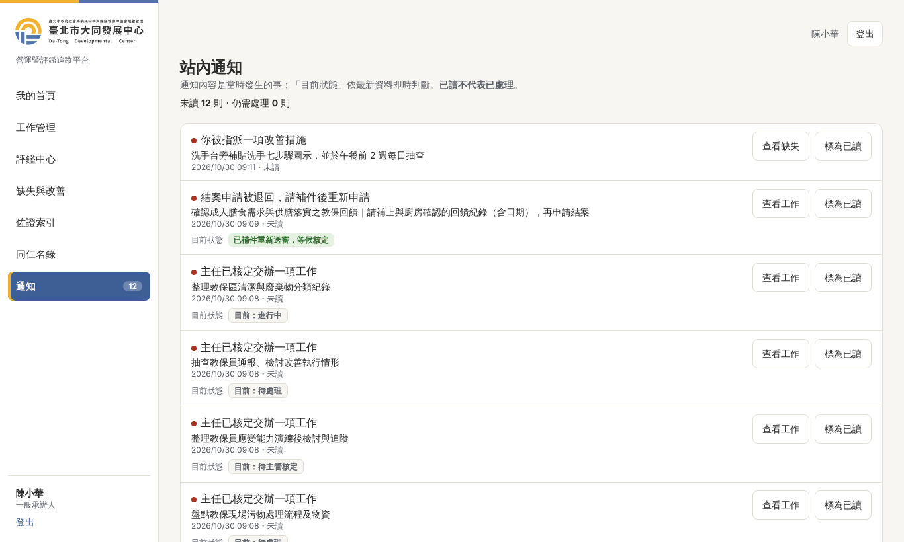
哪些事會通知你：
- 主任核定交辦一項工作給你（主責或協作）。
- 你的結案申請、期限變更、提報被核定或退回。
- 你被指派一項改善措施。
- 主管對你的工作催辦。
怎麼看通知：
- 按左側「通知」。
- 每則通知上方是當時發生的事；「目前狀態」是依最新資料判斷的現況。
- 按「查看工作」或「查看缺失」直接前往處理。
- 看完按「標為已讀」。
「已讀」不等於「已處理」。真正要做的事，以「我的首頁」列出的為準。
10. 附章：組長與評鑑統籌
這兩個角色由主任在平台上授權，沒有被授權的同仁可以跳過本章。目前社工組沒有組長，由主任核定。
10-1 組長
組長的首頁會同時有「我的工作」和「今天的重點」，選單多了「決策佇列」和「週報／月報」。組長只管自己組別的工作。
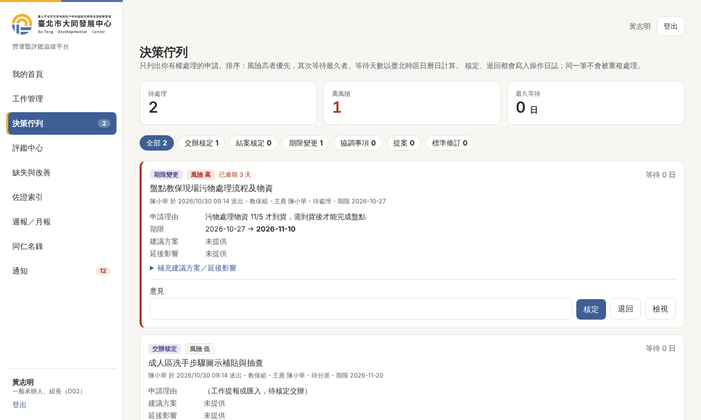
核定或退回申請：
- 按「決策佇列」。上方可用類型篩選：交辦核定、結案核定、期限變更等。
- 每張卡片寫著申請人、理由、期限變化。要看更多就按「檢視」。
- 在「意見」填寫說明（退回時必填），按「核定」或「退回」。
其他可以做的事：
- 在自己組別的工作頁「分派主責／協作」、「變更期限」、「風險評估」。
- 「週報／月報」下載 Excel，只含你有權限的資料。
- 留職停薪、離職等人事異動仍由主任處理。
10-2 評鑑統籌
評鑑統籌負責協調、催辦、彙報主任。評鑑統籌不是代理組長，沒有核定與人事權限。
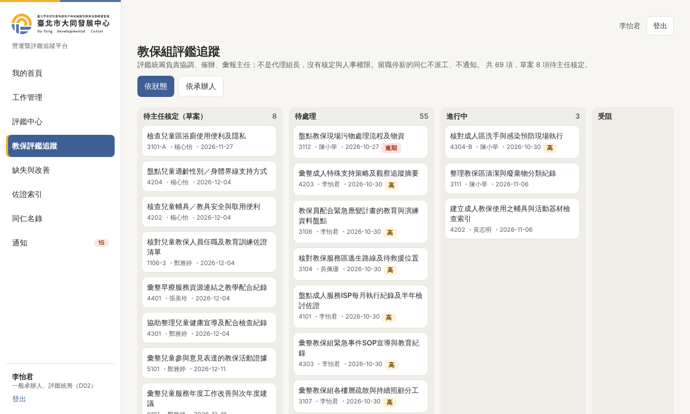
- 按左側「教保評鑑追蹤」。
- 用「依狀態」或「依承辦人」切換檢視方式，看哪些工作逾期、哪位同仁工作量偏重。
- 點工作名稱進入工作頁，可以「催辦」承辦人，或「向主任提報」需要主任決定的事。
- 核定、改派與人事異動，仍由主任決定。
11. 常見問題與求助
| 狀況 | 怎麼辦 |
|---|---|
| 收不到邀請信 | 查「垃圾郵件」「促銷內容」；還是沒有，請主任確認 Email 是否正確並重寄 |
| 邀請連結顯示無效或已過期 | 連結只能用一次，請主任重寄 |
| 登入後出現「目前無法使用此功能」 | 帳號還沒連結到你的人員資料，或已被暫停，請聯絡主任 |
| 主任說交辦了，我卻看不到 | 先按瀏覽器重新整理（電腦按 F5）；仍看不到，可能還在「待主任核定」 |
| 打開工作顯示「找不到資料」 | 你不是這項工作的主責或協作，或已被改派給別人 |
| 送出時說畫面不是最新資料 | 別人剛更新了這項工作。按畫面上的「保留輸入並載入最新資料」，你填的內容會留著，確認後再送出 |
| 畫面一直顯示「載入中…」或「資料暫時無法載入」 | 按「重試」或重新整理；一整天都這樣請通知主任 |
| 忘記密碼 | 請主任寄重設密碼信（第 2-4 節） |
| 寫錯了、想修改回報 | 回報不能修改，請再回報一次，寫明更正內容 |
| Google 雲端檔案打不開 | 雲端還沒分享給你，請聯絡登錄者或主任 |
個資提醒（請一定遵守）：
- 所有欄位都不寫服務對象姓名、病歷、家庭狀況、申訴內容。
- 不共用帳號，不把密碼告訴任何人。
- 匯出的 Excel 用完就刪除，不要轉寄。
- 電子佐證只放中心雲端，不開「知道連結的任何人」。
找誰幫忙： 帳號、密碼、權限、工作分派問題請找主任。工作內容問題請找你的組長或工作主責。